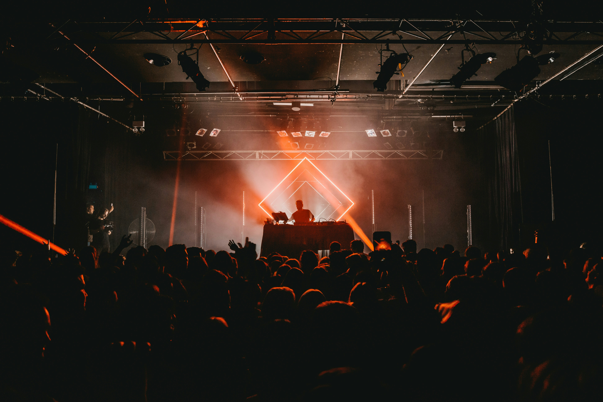

La psytrance è un genere particolare. Rimane una nicchia, ma ha comunque un seguito enorme ed è facile da capire al primo ascolto.
La struttura di base è semplice: cassa e basso continui, velocità alta e una ripetizione costante che serve solo a dare ritmo e farti entrare nel pezzo. Quello che fa la differenza è il lavoro sui sintetizzatori. Chi la produce perde parecchio tempo a creare suoni strani, acidi e un po' distorti.
A livello di dinamica i pezzi funzionano in due modi: o c'è un suono singolo che cambia pianissimo nell'arco di diversi minuti senza che te ne accorgi, oppure arrivano stop e ripartenze secche dal nulla.
Se ascolti elettronica e cerchi qualcosa di meno commerciale e più concentrato sul suono puro, ha senso dargli una possibilità. Anche partecipare a eventi meno commerciali è molto divertente, soprattutto perche
l'ambiente è accogliente e basato sul rispetto reciproco e divertimento collettivo

Artisti consigliati:
Captain Hook: sound ipnotico, psytrance lenta e orientata all' evoluzione sonora. Nel suo repertorio ci sono anche
molte canzoni con influenze edm
Indira Paganotto: pioniera del genere Psytechno, elementi psytrance uniti a sonorità associate ai grandi festival perfetta per chi
ama canzoni energetiche
Oxidaksi
psytrance molto veloce, suoni aggressivi e abrasivi, sopratutto nelle frequenze più alte. Un sacco di elementi che
si contendono costantemente l' attenzione dell' ascolatatore